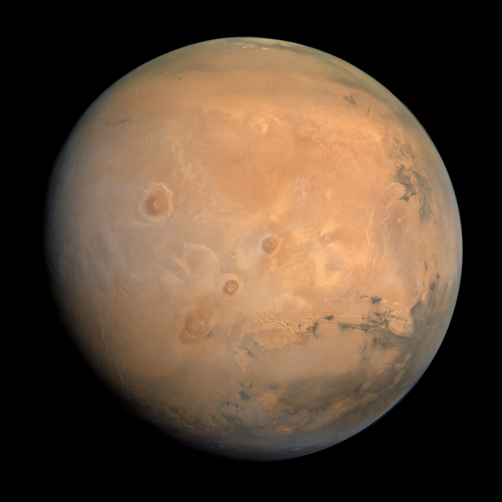

Mercury
Mercury is the smallest planet in our solar system and the closest to the sun. It has a rocky, cratered surface and no atmosphere to speak of. Its extreme temperature variations range from scorching hot to freezing cold, and its slow rotation gives it a long day and short year.

Venus
Venus is the second planet from the sun and is known for its extreme temperatures, thick toxic atmosphere, and volcanic activity. It's similar in size and composition to Earth but has a runaway greenhouse effect that makes it the hottest planet in our solar system.

Earth
Earth is the third planet from the sun and it is a rocky planet with a thin atmosphere, the only known planet with abundant liquid water on its surface. It has a magnetic field that protects it from harmful solar winds and is home to diverse life forms, including humans.

Mars
Mars is the fourth planet from the Sun and is often referred to as the "Red Planet" due to its reddish appearance. It has a thin atmosphere and a rocky surface with evidence of past water, making it a focus of astrobiology research.
Jupiter
Jupiter, the fifth planet from the sun, is the largest planet in our solar system and is primarily composed of gas and liquid metallic hydrogen. It has a strong magnetic field, dozens of moons, and is known for its colorful stripes and swirling storms, including the iconic Great Red Spot.

Saturn
Saturn is the sixth planet from the sun and is known for its beautiful rings, made up of ice particles, rocks, and dust. It is a gas giant like Jupiter and has dozens of moons, including the large moon Titan. Saturn has a fast rotation and a unique hexagonal-shaped storm at its north pole.

Uranus
Uranus is the seventh planet from the sun, and it's unique for its sideways rotation. It has a pale blue-green color due to the methane gas in its atmosphere and a faint ring system. Uranus is classified as an ice giant and has at least 27 known moons.

Neptune
Neptune is the eighth planet from the sun and the fourth largest in the solar system. It has a deep blue color due to the presence of methane gas in its atmosphere. Neptune is known for its strong winds and the Great Dark Spot, a massive storm that was observed in the 1980s.

What's this?
The eight planets of the solar system, in order from the Sun, are: Mercury, Venus, Earth, Mars, Jupiter, Saturn, Uranus, and Neptune. They are classified as either terrestrial (rocky) or gas giants, and each has unique characteristics and features.
Where are they?
The eight planets of our solar system are located at varying distances from the Sun. Mercury, Venus, Earth, and Mars are the inner rocky planets, while Jupiter, Saturn, Uranus, and Neptune are the outer gas giants. Each planet has its own unique characteristics and orbits around the Sun.
How did the planets form?
The eight planets in our solar system are thought to have formed from a disk of gas and dust surrounding the young sun. Over time, gravity caused the material in this disk to clump together, forming planetesimals that eventually grew into planets. The inner planets, including Earth, are primarily composed of rock and metal, while the outer planets, including Jupiter and Saturn, are primarily composed of gas and ice. This process, called accretion, took millions of years and is still ongoing in other star systems today.